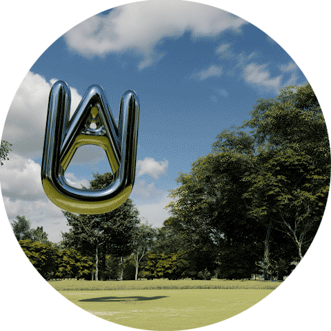
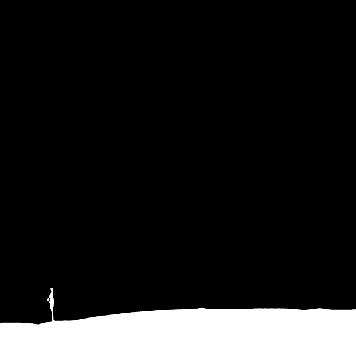

this is a time and place where the practice of architecture is fully decoupled from the incentives that drive innovation and change. the ideals of design thinking and democratic design have slipped into group think while at the same time starchitects are overpaid and tokenized. the value of the designer as an individual thinker is dilute and threatened by pintrest and firms alike.
architect unknown sets out to prod at this current paradigm of incentives, and instead focus on helping others imagine and build a future where instead of searching for solutions or answers we examine questions to uncover new questions. one where individuals are incentivized to test the absurd and surreal as well as the less than popular ideas about design, architecture, urbanism, city building, world building, cosmological development and most importantly fail.
without fame
without fortune
without failure
wtf
the architects who are not known